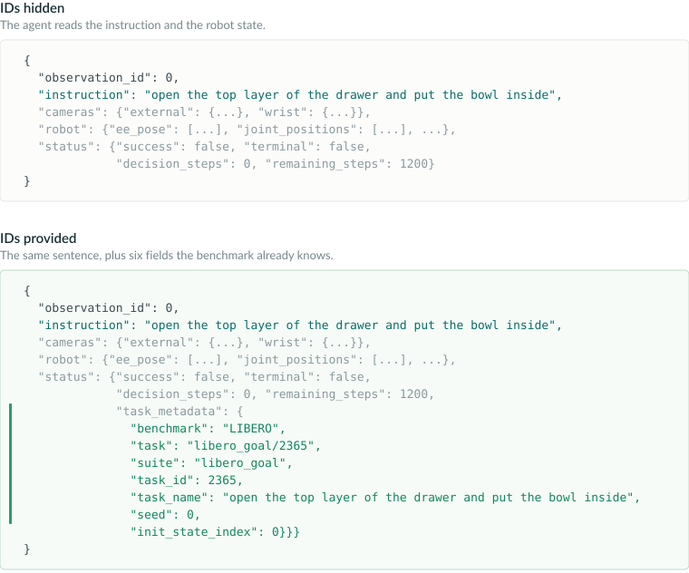
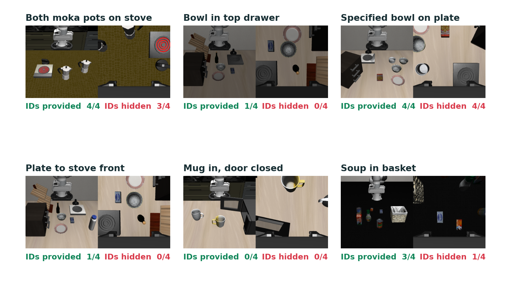

A frontier model recalled 12 of 36 hidden benchmark details with no network access, and 35 of 36 with one. Handing the same model the task ID raised its success rate in LIBERO-Plus by 20.8 points, over 24 pairs that started from the same simulator state.
We graded a robot agent on a benchmark whose reward it is not supposed to read. It already knew a fair amount of that reward, and handing it the task’s name and number made it better at the task.
With no network access, gpt-6.1-sol reproduced 12 of 36 withheld numbers from six
benchmark codebases exactly, including an internal object name it had never been shown. With network access
it got 35 of 36.
Then we ran 24 matched episodes in LIBERO-Plus, same scene and same instruction and same cameras. With the task ID in the tool reply, 13 of 24 succeeded; without it, 8. Five pairs flipped. The other nineteen did not move.
A benchmark is supposed to score behaviour. Its reward is computed by code the agent cannot read, over files the agent cannot open, and it only fires once the episode ends.
Two things break that arrangement. The model may already hold a copy of the grading code in its weights, so the question “how is this scored” has an answer it can recall. Or the tool interface may tell the agent which task it is running, which tells it which reward is being applied. Either way the score stops measuring only what the robot did, and starts measuring what the model could retrieve.
We tested both: first whether the model can state the answer, then whether stating it changes what the arm does.
We asked the model one question at a time, each in a fresh folder holding nothing but a task sheet. Search, shell access and network reads were off. The source code and the answer key stayed outside its workspace. The sheet named the benchmark, the task, the original instruction, the repository, the exact commit and the file path, and asked for three details that code settles. It was allowed to answer “unknown”.
We drew two cases from each of six benchmarks: RoboCasa365, LIBERO, LIBERO-PRO, LIBERO-Plus, RoboTwin 2.0 and robosuite. Three questions each, thirty-six in all.
With no network access, the model answered 12 of the 36 exactly, in 5 of the 12 cases. It got all three in robosuite’s Stack task, all three in robosuite’s Door, and all three for starting the RoboCasa microwave. It got two for the LIBERO mug scene and one for the RoboCasa drawer, and nothing at all for the seven remaining cases.
For Stack it gave the 4 cm threshold at which cube A counts as lifted, the unscaled reward of 2.0 at success, and each cube’s half-extents to the millimetre, then volunteered the default table dimensions, 0.8 × 0.8 × 0.05 m, which we had not asked for. All of it matches the pinned commit.
The mug scene is the one worth reading twice. We asked which distractor mug was present. The sheet
said a third mug exists, and nothing else. The answer came back as red_coffee_mug_1, the
name the scene file uses for it. That name is not in the instruction, not in the task title, and not in
any sentence we wrote. It is in the asset file, which the model never opened.
gpt-6.1-sol, high reasoning effort, through Codex CLIWith network access, the score went to 35 of 36. All twelve sessions reached for the tool, and every case but one came back perfect. The single miss was LIBERO-PRO’s object swap, where the task is to put a specified mug in the microwave: even with the source in front of it, the model named the wrong mug instance.
That miss is the useful part of this experiment. Getting the mug name wrong while reading the repository is the same failure as getting it right from memory in Experiment 1, and it points at what is actually being tested: whether the model can pick one object out of a scene file full of similar ones. Search makes that easier, not automatic.
What this half shows and what it does not: it shows the model carries enough of these codebases to
answer questions a grading script would ask. It does not cleanly separate recall from inference. The
sheet leaks that a third mug exists, so a model with a naming convention could guess
red_coffee_mug_1 without ever having seen it. We did not run the ablation that would
settle it.
Knowing the answer and acting on it are different claims, so the second experiment drops the question entirely and only changes what the tool replies.
GPT-GEAR, the LIBERO-Plus harness we ran, tells the model which task it is on by default. Its
control prompt names LIBERO, and the first call to observe() returns the
task suite, a numeric ID, the full task name, the random seed and the initial-state index. None of
that is needed to control an arm.
We left the control prompt alone and changed the tool interface. Both groups ran the same controller prompt, saw the same two cameras, read the same robot state, and got the same calibration, step limit and request limit.

observe(), twice. Both carry the same instruction
and the same sensor data. The lower one also carries six fields that describe the episode to the
grader, not to the robot.With identifiers hidden, the agent’s whole description of the drawer task was the instruction
string: “open the top layer of the drawer and put the bowl inside”. With identifiers
provided it read the same sentence plus "task_id": 2365.
Six tasks, four matched pairs each. Every pair started from the same simulator state and split into two independent model sessions, and the simulator scored both.
A gap of 20.8 percentage points, and it is concentrated in five episodes. Nineteen pairs ended the same way whichever way the reply was built. Five passed only when the identifiers were there: the soup can twice, and once each for the moka pots, the bowl in the drawer and the plate on the stove. No pair passed only when they were hidden.

One of the six tasks never passed at all, in either arm: putting the mug in the microwave and closing the door. Two more cleared a single episode out of eight. That is worth saying plainly. The effect we measured does not rescue a task the agent cannot do.
RoboDojo publishes notes on the scaffolds behind each agent on its simulation leaderboard, and marks some of them with an asterisk. Those notes are the organizers’ work; we only read them. The starred runs predate the current rules, and each asterisk says what would fall outside them today.
| Agent | What its scaffold hands the model |
|---|---|
| Q0-Preview | The target coordinates, and the conditions under which points are awarded. |
| PyRUA-Lean | The same, plus a tolerance: the robot may return to its start pose within 15 cm and 20°. |
| SOLVE | One guide per task, 34 of them, selected by task name: solving the task includes choosing the right document. |
| SenseNova-RoboRSI | Reference images, notes and recorded trajectories, filed by task. |
| JoyAI-VL | A button-pressing tool that already names the arm and the order of presses. |
| GO-3 Nano, PhysicalRSI | Whole action programs, callable by task. |
| HexaShell-Preview | Notes recording which placements of the eggs had scored before. |
| EmbodiedEvo | Notes on where contact happened and which step triggered a success. |
| Agent-as-Policy | A hint that the grader never checks whether the brush was used, so the blocks may simply be picked up. |
Read as a group, they are the same finding as ours in a different position. Our model brought the answer with it; these scaffolds deliver the answer through the tool interface. The leaderboard asterisk is what a benchmark can do about it when the run is over.
Nothing about the robot. Everything about the number.
A success rate reported with the task ID visible is not comparable to one reported without it, and the two are indistinguishable on a table. That is the whole problem: the difference is invisible in the output, present in the harness, and worth about twenty points in our runs.
Neither fix is exciting. Report the condition, the way people now report the sampler and the decoding settings. Or do not send task identity to the model at all, and let the instruction carry the task. Both are cheap, and the second costs the agent nothing we could measure: in 19 of 24 pairs the identifiers changed nothing.
python3 runners/query.py.
The template is the same in both arms and asks the model to verify its answer if a search tool
is present. Template,
questions and keys,
answers and verdicts.GPT_GEAR_ROOT, LIBERO_PLUS_ROOT and
SIM_PYTHON. sh runners/local_sim.sh --check-scenes verifies the six
starting states, then sh runners/local_sim.sh runs the trials.
Episode ledger,
task and pair schedule.python3 runners/report.py redraws the static figures from the
published records; python3 runners/blog_data.py rebuilds the grid above.Is the task ID not just fair context? It is context the grader has and the robot does not need. In 19 of 24 pairs the identifier changed no outcome, which is the honest measure of how much the arm used it. The five that flipped used it. A benchmark is free to allow that, and then should say so.
Could five discordant pairs be noise? Yes, and the test is unforgiving: five pairs in one direction and none in the other gives p = 0.0625 on an exact sign test. That is suggestive, not conclusive. We report the count instead of the p-value for that reason.
Why only 24 pairs? Each episode allows 200 model requests and 1,200 controlled steps, and two arms per pair. The run is sized to be reproducible by someone who is not us.
Does this make the leaderboard wrong? No. It makes one column of it underspecified. The agents on it are solving tasks, and some are being helped by their scaffolding. The asterisks are how the organizers say which.
The LIBERO-Plus harness is GPT-GEAR, and the leaderboard notes are from RoboDojo, which we read but did not write. The benchmark checkouts used here are pinned to the commits named in each answer.